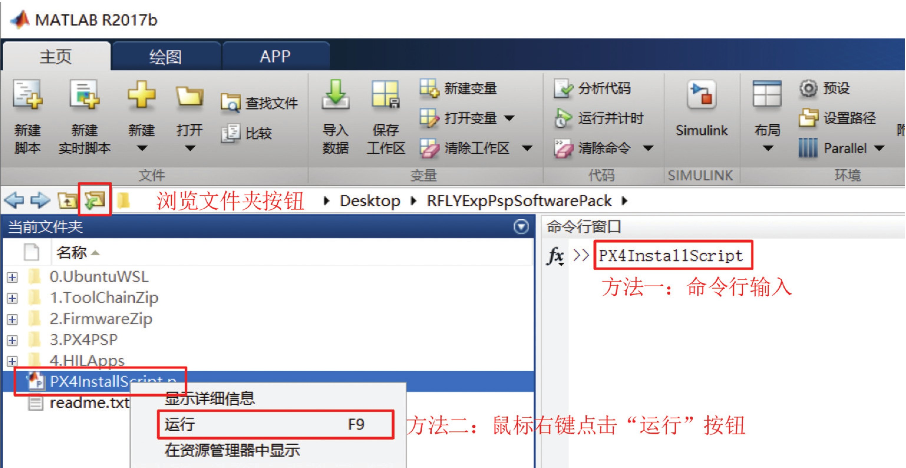
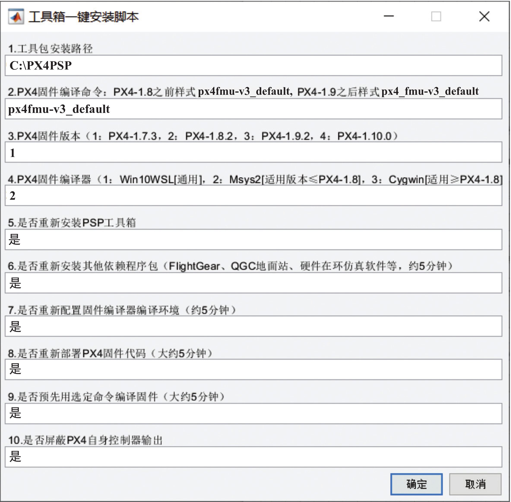
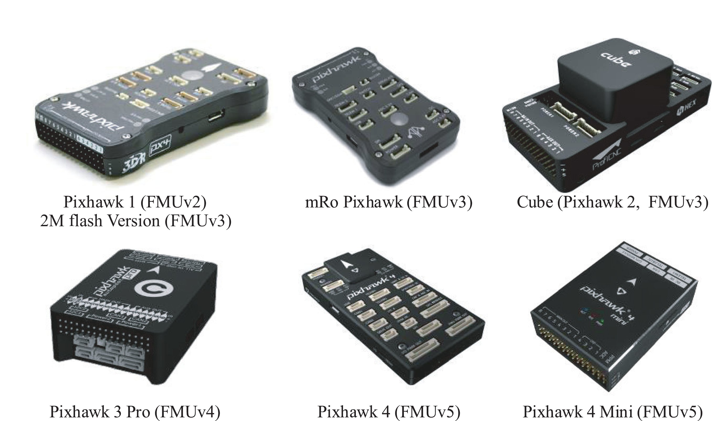

2. 软件包安装¶
整个多旋翼仿真软件包的安装流程已经高度自动化，可以运行我们的一键安装脚，实现快速全自动的部署。
2.1 安装步骤¶
整体的安装步骤可以总结为以下几个步骤。
（1）从官方网站 (https://rflysim.com) 下载得到RflySim基础版软件安装包镜像文件“RFLYExpPspSoftwarePack.iso"，然后将其解压为文件夹或加载到虚拟光驱。（2）打开 MATLAB 主程序，将当前文件夹设置为刚才下载并解压(或加载在虚拟光驱)得到的“RFLYExpPspSoftwarePack"文件夹。（3）在 MATLAB 的“命令行窗口"中输入命令“PX4InstallScript"并按下回车键来运行一键安装脚本。另外一种方法：用鼠标选中 “PX4InstallScript.p"文件，按下鼠标右键，在弹出菜单中，单击“运行"按钮来运行一键安装脚本。图 2.3 多旋翼仿真软件包与一键安装脚本
（4）在弹出如下所示的配置窗口中，根据实际软/硬件情况选择合适配置(这里推荐初学者使用默认配置，对应 Pixhawk 1(2M闪存)版自驾仪硬件的 px4fmu-v3 default编译命令，PX4-1.7.3 版本的 PX4 固件，安装目录为 C 盘，占用 6G 左右空间)，单击右下角的“确定”按钮。图 2.4 PX4InstallScript 脚本安装选项
(5)耐心等待软件包安装部署完成，总共需要大约 30 分钟。
需要注意的是：
- 杀毒软件可能会阻止本脚本生成桌面快捷方式。如果脚本提示快捷方式生成失败，请关闭杀毒软件(Win10系统还需要暂时关闭“实时保护”开关），并手动单击安装目录(默认为 C:PX4PSP)下的“GenerateShortcutCMD. bat”脚本，自动生成所有软件快捷方式。
- 如果想更改固件编译版本或还原编译环境，可以再次运行“PX4InstallScript"命令，更改对应选项即可。
- 读者可以查看“RFLYExpPspSoftwarePack"文件夹内的“readme.txt"文件查看更详细的注意事项。
2.2 高级设置¶
对于高级独立开发者，可以在配置窗口设置安装路径、PX4 固件版本、编译命令和编译环境等。配置窗口中的各项选项详细解释如下。
（1）工具包安装路径。本平台的所有依赖文件都会安装在本路径下，大约需要6G 的空间。默认安装路径是“C:PX4PSP”，如果 C 盘空间不够可以选择其他盘符下的路径。需要注意的是路径名称必须正确，且只能用纯英文的路径，否则会导致编译失败。（2）PX4 固件编译命令。默认的编译命令为“px4fmu-v3_default”，在 PSP 生成控制器代码后，会自动调用编译器将其编译为“px4fmu-v3_default.px4”格式固件文件，然后将该“.px4”文件下载并烧录到支持的硬件上，就可以实现算法的部署。使用不同的 Pixhawk硬件产品，需要选择不同的 PX4 固件编译命令。“px4fmu-v3 default”可用于 mRo Pixhawk 和 Cube (Pixhawk 2) 两款热门产品；而常用的“px4fmu-v2 default”支持最知名的 Pixhawk 1 自驾仪。当然，PX4 还支持其他的一些硬件(如 Intel Aero 、 Crazyfile 等)， 对应的编译命令 如下：
- Pixhawk 1:
px4fmu-v2 default- Pixhawk 1 (2M flash):
px4fmu-v3 default.- Pixhawk 4:
px4fmu-v5 default- Pixracer:
px4fmu-v4 default- Pixhawk 3 Pro:
px4fmu-v4pro default- Pixhawk Mini:
px4fmu-v3 default- Pixhawk 2:
px4fmu-v3 default- mRo Pixhawk:
px4fmu-v3 default- HKPilot32:
px4fmu-v2 default- Pixfalcon:
px4fmu-v2 default- Dropix:
px4fmu-v2 default- MindPX/MindRacer:
mindpx-v2 default- mRo X-2.1:
auav-x21 default- Crazyflie 2.0:
crazyflie default- Intel Aero Ready to Fly Drone:
aerofc-v1 default图 2.5 Pixhawk 硬件产品系列和对应编译命令
（3）PX4 固件版本。PX4 源代码版本一直在更新，目前最新的固件版本为 1.10。随着固件版本的升级，功能会逐渐增加，支持的新产品也越多，但是对旧的一些自驾仪硬件的兼容性就会变差。由于本书使用的是经典的 Pixhawk 1 版本自驾仪硬件(应用广泛价格实惠，且有 LED 模块便于观察实验效果)，推荐选用较旧的固件版本 PX4-1.7.3 以获取更好的使用效果。（4）PX4 固件编译器。由于 PX4 源代码的编译依赖于 Linux 编译环境，本软件包提供了三套编译工具链来实现 Windows 平台下对Linux 编译环境的模拟，它们分别是：①基于 Windows Subsystem for Linux (WSL) 的编译环境 Win10WSL 编译器；②基于 Msys2 的Msys2Toolchain 编译环境；③基于 Cygwin 的CygwinToolchain 编译器。其中，CygwinToolchain和Msys2Toolchain编译器都支持Windows7及以上系统，部署方便且兼容性强，但是编译速度较慢。其中CygwinToolchain编译器支持PX4-1.8版本及以上固件，Msys2Toolchain编译器支持PX4-1.8版本及以下固件。对于 Windows10 1809 及以上的系统版本，RflySim高级版平台还可以按照
0.UbuntuWSL\Win10UbuntuInstallation-Step.docx的方法选择安装 Ubuntu 子系统，然后在配置窗口中选择Win10WSL 编译器，这种方式可以大大加快编译速度，而且兼容所有版本的 PX4 固件。（5）是否重新安装 PSP 工具箱。若该选项设置为“是”，则会将 PSP 工具箱安装在本地MATLAB 软件中。若 PSP 工具箱已经安装过，则会对 PSP 工具箱进行全新安装。若选择“否”，则脚本对 PSP 工具箱不做任何更改(不会卸载掉安装的 PSP 工具箱或有其他动作)。（6）是否重新安装其他依赖程序包。若该选项设置为“是”，则会将 FlightGear、QGC地面站、CopterSim、3DDisplay 等软件部署在设定的安装路径上，并安装 Pixhawk 硬件的相关驱动程序，以及在桌面生成这些软件的快捷方式。若安装路径上已经部署过相关依赖软件，选择“是”，则会删除旧的安装包并进行全新重新安装。若该选项设置为“否”，则不做任何修改。（7）是否重新配置固件编译器编译环境。若该选项设置为“是”，则会将选定的编译器(Win10WSL、CygwinToolchain 或Msys2Toolchain)部署在设定的安装路径上，若环境已经存在，则会清空旧的编译环境，进行还原与全新部署。反之，若该选项设置为“否”，则不会进行任何更改。（8）是否重新部署 PX4 固件代码。若该选项设置为“是”，则会将选定的 PX4 Firmware源代码部署在设定的安装路径上，若 PX4 Firmware 固件存在，则会删除旧的固件文件夹，并进行全新部署。若该选项设置为“否”，则不会进行任何更改。（9）是否预先用选定命令编译固件。若该选项设置为“是”，则会对部署固件进行预编译，这样可以大大节省后续代码生成与编译的时间，同时可以检测环境安装是否正常。若该选项设置为“否”，则不会进行任何更改。（10）是否屏蔽 PX4 自身控制器输出。若该选项设置为“是”，则会对 PX4 自身的控制器输出信号进行屏蔽，防止其与 Simulink 生成的控制器发生冲突。在本书的仿真与实际飞行实验中，这一项必须设置为“是”。若选择“否”，则不会对 PX4 自身的控制输出进行屏蔽，这种模式可以用于测试 PX4 自带的控制算法。注解
注意：PX4 固件版本从 1.9 开始，固件编译命令由
px4fmu-v3_default.px4变更为了px4 fmu-v3_default.px4格式。由于本书使用的软件包会持续更新，为确保对最新版本 PX4 固件的支持，在使用后续新版本固件(大于等于 1.9)时，需要注意修改编译命令的格式。
2.3 安装完成效果¶
当上述一键安装脚本成功执行后，可以查看是否包含以下内容： （1）桌面上能够看到生成的核心工具的快捷方式；
图 2.6 仿真软件包桌面快捷方式
（2）在安装路径(默认是“C:PX4PSP”)会出现所有软件的存储文件夹。需要注意的是，本平台所有软件都是完全绿色的(或称可携式软件，最大特点是和系统其他软件完全独立)，且独立于原来安装的软件(如官方版的 QGroundControl 或FlightGear 等）。 “Firmware”文件夹中存储的是 PX4 的源代码；“examples”文件夹是 PSP 工具箱附带的 Simulink 例程；“drivers”文件夹存储着 Pixhawk 系列自驾仪的驱动程序；“Python27”文件夹存储着一个 Python 环境，用于实现 PSP 工具箱中的自动代码下载功能。
图 2.7 仿真软件包安装目录下所有文件
（3）在 MATLAB 主界面的“附加功能"-“管理附加功能"页面，可以看到新安装的 PSP 工具箱图标。在该页面可以对 PSP 工具箱进行一些管理设置，如禁用、卸载、查看安装目录等。需要注意的是，本软件包安装脚本只需运行一次即可给本计算机上所有 R2017b 及以上版本的MATLAB 使用。
图 2.8 MATLAB 中 PSP 工具箱管理页面
（4）任意打开一个 Simulink 文件，单击“库浏览器"(Simulink Library Brower)按钮，可以在其中找到 PSP 工具箱的“Pixhawk Target Blocks"模块库。
图 2.9 Simulink 库浏览器中的 PSP 工具箱模块
如果想卸载本平台软件，只需要简单执行下列步骤：
- 删除软件安装过程中生成的所有桌面快捷方式；
- 删除“C:PX4PSP”文件夹内的所有文件和文件夹；
- 卸载 PSP 工具箱。
3.2.3软件简要介绍¶
（1）依次桌面快捷方式：“FlightGear-F450"、“CopterSim"、“QGround- Control"和“3DDisplay"，逐一确认各个软件可以正常运行。
图 2.10 基本软件正常运行界面展示
（2）双击桌面快捷方式“Eclipse"，可以打开 Eclipse 软件。
图 2.11 Eclipse 导入 PX4 Firmware 源代码方法
在 Eclipse 菜单栏上选择“File"-“import …"-“C/C++"-“Existing Code as Makefile Project"单击下方的“next"按钮。在弹出新窗口的“Existing Code Location"栏目，单击“Browse"按钮，浏览选择安装路径(默认是“C:PX4PSP")下的“Firmware"文件夹，再选择“Cross GCC"，单击“Finish"按钮。 完成上述步骤后，在“Project Explorer"窗口可以看到“Firmware"固件的代码和结构，可以在其中阅读 PX4 代码，并尝试修改。也可以结合 PX4 的开发者文档网站（http://dev.px4.io/master/en/index.html），更清楚地了解 PX4 中算法的构架与实现原理，加深对实际飞行控制系统的理解。注意：如果是第一次打开 Eclipse，会有一个 Welcome 欢迎标签页，因此需要先手动关闭该标签页。
图 2.12 Eclipse 中代码阅读界面
（3）双击桌面的“Win10WSL"、“Msys2Toolchain"或“CygwinToolchain"快捷方式，可以弹出如下图所示的命令窗口界面（原界面为纯黑背景，这里图片己做反色处理）。由 于本编译环境本质上是一个 Linux 模拟系统，因此可以在其中输入基本的 Linux 指令（如 “ls"“pwd"“gcc--version"等），查看运行效果。因此对于不熟悉 Linux 操作的读者来说，本编译器软件也可以作为一个 Linux 的学习与练习工具。该编译器最重要的功能是编译PX4 的源代码，生成“.px4"固件文件。可以在命令行中输入“make clean"来清除旧的编译信息，以及输入“make px4fmu-v3_default"指令来编译适用于 Pixhawk 1 的固件文件“C:PX4PSPFirmwarebuildpx4fmu-v3_defaultpx4fmu-v3_default.px4"。由于 PSP在代码生成后会自动调用本编译环境，因此普通读者不需要掌握其使用方法。
图 2.13 编译器命令窗口界面